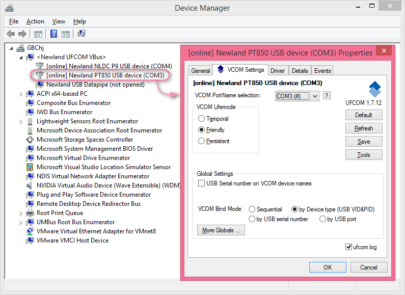
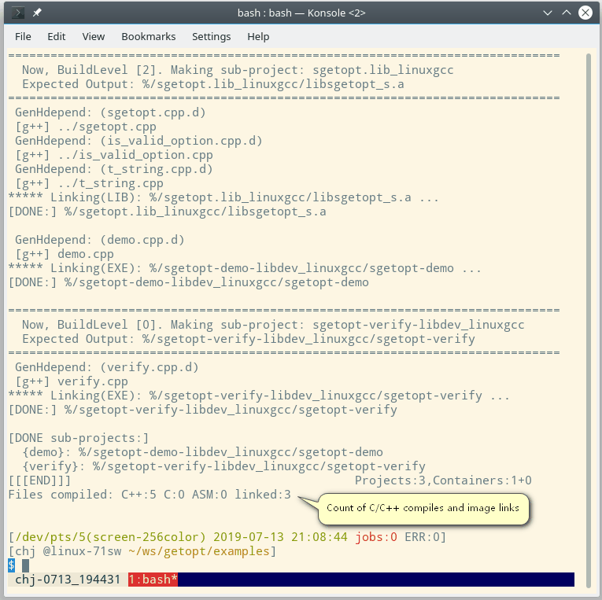
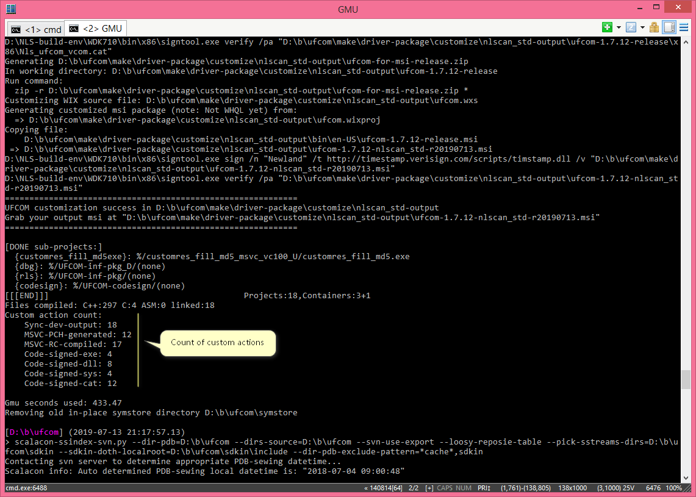

人类社会进步的标志，在于将自己的想法不断地变成现实。
Human society moves forward, with our continuous effort turning our ideas into reality.
人生的意义在于探索世界运行的规律、创造美好的事物。
The meaning of life, is to find out rules of the world, and to create beautiful things.
我是个诚实正直的人，虚伪和欺骗会让我很不自在。
I'm an honest and decent person, going untruthful and deceitful makes me uncomfortable.
我是九型人格中的 5 号（观察者）、1 号（完美主义者） 和 6 号（怀疑论者）。
I'm #5(Observer), #1(Perfectionist) and #6(Loyal Skeptic) according to Enneagram.
我乐于了解新鲜的事物，因为每样事物看起来对这个世界都有它存在的意义。
I'm always ready to learn new things, since everything that exists has its own significance to this world.
我有写日记和工作记录的习惯，因为记忆对我来说很宝贵。
I have the habit of writing diary and working records, because memory is vital to my life.
我希望做能够为人们带来长久益处的工作。
I wish to be engaged in works that can bring people long-term benefits.
我希望我的工作伙伴能够分享他们的知识和经验，因为我自己一直就是这么做的。一个开放源代码的工作环境我会特别喜欢。
I wish my workmates have a passion for sharing their knowledge and experience, because I myself have done this all the way. An open-source environment is especially welcome.
我一直在收集软件开发中的最佳实践.。最佳实践，是让程序员的生活变得越来越有趣的重要因素。
I'm always collecting best practices in software development. Best practices are what make a programmer's life more and more intriguing.
程序员改变世界。做一个程序员是幸运的，因为我们可以用编程技能来达成很多期望，这些期望在外行的眼中会被认为太浪费时间或者太浪费金钱而无法实施。不过呢，平庸的程序员（多年前就被叫做“码农”的那种吧）也许不会想那么多，他们只是将写代码当作获取薪水的手段罢了。我想我肯定不是那种人，也不应该是那种人。
Programmers change the world. Being a programmer can be lucky, because we can use programming skills to fulfill many expectations, which would otherwise be too time consuming or too costly to achieve. However, many average programmers, joked as "coding coolie" from many years ago, may not think so, as they consider programming merely the way to get their salaries. I don't think I am, or should be, that kind of person.
每项技艺都有它的亮点。如果你能找到在生活中应用它的方法，生活就能充满乐趣。
Every feat has its own point. If you find ways to apply it to life, your life will be enlightened.

UFCOM 是我到目前为止最重要的软件作品。它也是我完成过的最具挑战性的任务。非常幸运的是，我没有让自己失望。在解决了几百个问题以及发布二十多个版本后，它已经工作得非常漂亮了，远远超越该项目启动时我对它的期望。一句话，UFCOM 是非常成功的作品。
UFCOM is the most important software of mine up to now, and it is the most challenging work I have done. Luckily, I'm not disappointed by myself. After solving hundreds of issues and releasing 20+ versions, it works like a charm, far beyond my initial expectations on project startup. In one word, UFCOM is a great success.
UFCOM 是个什么样的软件？
What kind of software is UFCOM?
我在用户指南里是这么写的：
UFCOM(USB Flexible COM Port 的缩写) 是由新大陆自动识别公司开发的全新的虚拟串口驱动程序，2017 年起向我们的客户提供，它配合虚拟串口模式的 USB 扫描枪使用，提供和 USB 扫描枪之间的双向通信功能。UFCOM 可运行于 Windows XP ~ Windows 10 x86 & x64 所有版本，也包括同时代的各版本 Windows Server 。
UFCOM 提供的功能和 Windows 系统自带的通用虚拟串口驱动 usbser.sys 类似，可完全替代 usbser.sys ，不但修正了 usbser.sys 的很多糟糕行为，还提供了更强大的功能。
I state it in the User Guide:
UFCOM(abbreviation of USB Flexible COM Port) is a brand new Virtual COM Port driver developed by Newland Auto-ID. We provide this driver to our customer since year 2017. This driver works with our barcode scanner hardware; it enables bidirectional communication between your Windows applications and our scanners. UFCOM works on Windows XP ~ Windows 10, x86 & x64 platforms, and their Server counterparts.
UFCOM provides similar functionality as that of Windows stock usbser.sys and acts as a replacement for usbser.sys. UFCOM not only fixes many ugly behaviors of usbser.sys, but also is much more feature-rich.
UFCOM 的哪些工作是由我完成的？
Which parts of UFCOM is accomplished by me?
99% 的工作由我完成。包括以下部分：可行性调研，功能设计，用户界面设计，具体编码，bug 修正，自动构建系统，调试与诊断措施，自测程序，测试指南，用户指南，安装包制作。
99 percent of it. Including: Feasibility investigation, feature design, user interface design, actual coding, bug fixing, build system, debugging and diagnosing facility, self-testing programs, testing guide, user guide, and installer making.
我们为什么需要开发 UFCOM 呢？
Why do we need UFCOM?
简言之，没有 UFCOM 这样的驱动程序的话，在 Windows 10 之前的 PC 上使用虚拟串口方式跟 USB 设备进行通信，犹如鱼鲠在喉。
Briefly speaking, without driver software like UFCOM, using virtual COM port interface to communicate with a USB device is a real pain in the neck, unless you upgrade to Windows 10.
从 Windows XP 起，微软提供了一个叫 usbser.sys 的驱动程序文件，用于实现虚拟串口功能。USB 外设厂商只需自行准备一个 .inf 文件即可让 Windows 生成虚拟串口。然而不幸的是，这个老式的 usbser.sys 是如此地 bug 缠身以至于它只能被当作一个玩具来使用。最糟糕的一个行为是：应用程序未关闭串口句柄的情况下，用户拔除 USB 硬件，虚拟串口设备对象将陷入瘫痪，重新插入 USB 硬件也难以恢复。此问题一直到 Windows 8.1 都没有改进。
Since Windows XP, Microsoft has bundled a driver file named usbser.sys with Windows OS, which is to provide virtual COM port functionality for USB devices. But unfortunately, this stale driver is so buggy that you can only use it as a toy, that is, not suitable for production use. The most worse behavior is: If the user unplugs the USB hardware device without first closing application layer COM port handle, the driver object will fail, and replugging the USB device will not guarantee recovery. Even Windows 8.1 has not made any improvement to this.
因此，USB 硬件厂商（比如 USB 条码扫描枪厂商）必须提供专门开发的虚拟串口驱动程序来解决那些 bug。知名国际条码设备厂商其实都已经这么做了（比如 Symbol Technologies, Honeywell AIDC, Datalogic）。然而新大陆在 Windows 驱动程序方面几乎没有技术积累，随着客户逐年增多，这就成了个大问题。公司一直希望有人能够承担这项任务，也请人做了一些尝试，但都没有大的进展。时间到了 2015 年，我维护的 PT-850 系列产品接近生命周期尾声了，因此我能够腾出时间来尝试啃动这块硬骨头。
Therefore, USB hardware(e.g., USB barcode scanner) vendors has to provide their own non-buggy drivers. Well known world-wide barcode device vendors have done this already, such as Symbol Technologies, Honeywell AIDC, and Datalogic. But Newland has little tech knowledge in Windows driver development, and this becomes a big problem as she gains more and more customers country-wide and world-wide. Of course, the company has hoped someone can assume this driver development work, and someone has tried, but no much progress. The time comes to 2015, and the PT-850 series I have been maintaining is close to its end of life, so I finally have time to dig into this tough problem and try to push it forward.
我如何取得进展？
How do I make progress?
这项工作需要来自三个领域的知识。一，理解 USB 协议是如何工作的；二，Windows 内核架构以及调试内核代码的方法；三，软件工程方法。看看到 2015 年的时候我已经有了哪些积累了。
It needs knowledge from 3 realms. (1) Understand how USB protocol works; (2) Windows kernel architecture and kernel code debugging technique; (3) software engineering methodology. Let's see what I have by year 2015.
-
USB 协议: 50% 就绪。对于 USB 我已经有相当程度的了解了，因为在过去的一年中，我对 PT-850 的设备端 USB 代码进行了彻底重写。在那之前，PT-850 有一份现成的 USB 代码，那是我的几位前同事在八年之前开发的，能工作，但功能很少而且比较脆弱——它们仅仅是将芯片提供商给的样板代码做了一些修补而已。但我的做事风格不同，我会尽力弄懂代码背后的每一项概念。因此，我在翻新 USB 代码的过程中对 USB 协议进行了较为深入的研究。值得一提的一个工具是 USB 协议分析器，称作
Beagle USB 480. 这个小玩意儿能捕捉 USB 物理线路上的数据包，向我们展示真实世界中 USB 协议的工作过程。对于 USB 开发来说，它是不可或缺的工具。没有它，我很难取得进展，换言之，我无法仅仅通过阅读 USB 协议规范文本来理解 USB。
USB protocol: 50% ready. I have known USB quite a bit, because in the past year I did a complete rewrite of PT-850's USB device-side code. Before that, PT-850's had its own USB code, developed by some colleagues 8 years ago, workable, but feature poor and somewhat fragile -- they just copied the boilerplate code from USB chip vendor and did some patches to make it work. But my way is different, I tried to comprehend each bit of concept behind my code. So, during my overhaul, I studied USB protocol to quite some extent. One tool worth mentioning is the USB protocol analyzer, called
Beagle USB 480. This small gadget captures USB packets from physical lines and show me how USB protocol works in real world. It is indispensable for USB software development. Without it, I can hardly make any progress. In other word, I can't get to know USB just by reading the specification text.
-
Windows 内核: 10% 就绪。我有过几年的 Windows C++ 应用程序开发经验，这肯定有帮助，但进入内核领域更像是需要学习一个全新领域的知识。
Windows kernel: 10% ready. I have some years of Windows application layer development with C++, and sure it helps, but entering kernel layer is more like entering a whole new realm.
-
软件工程方法: 80% 就绪。我的软件工程思想都是从实践中总结而来的，毕竟我已经有了 12 年的软件开发经验了。我需要保证开发过程向正确的方向行进、少走弯路，需要保证在软件结构变得复杂之后依旧能够不断地改进、且保持高质量，需要让软件容易被测试、让潜藏的缺陷能够尽早暴露出来而非掩藏得更深，需要有一套自动构建设施来让版本发布很便捷且不会轻易引入人工错误。总体思想有了就成功了一半，针对具体问题的实现方法可以留待具体问题出现时再解决。
Methodology: 80% ready. My software engineering methodology comes from my own practice over the past 12 years. I need to: ensure the development always heads for the right direction, less detour; ensure there is always room for improvement, no compromise to quality, even after the software becomes complex; ensure the software can be easily tested, to make potential bugs stand out instead of hiding them deeper; ensure an automated build facility works so that version releasing is convenient without manual error slipping in. Holding correct general idea is half the success, specific issues should always have a way out.
既然最大的一块空缺在 Windows 内核上，我需要找到这方面的学习材料。事实上，对于新领域的学习，我非常依赖书籍。一本好的明确主题的书籍，能够让我对那个主题有系统性的了解。我很奇怪我的同事很少像我这样看书，他们似乎总是通过搜索网上零碎的文章来学习。网上文章的缺点在于，它们通常篇幅有限，很难呈现一个知识体系的全貌，对于所陈述的内容常常缺乏足够的背景上下文铺垫。从 Internet 上找来的零零星星的资料，也许有助于解决一些很具体的问题，或是得到一些灵感，但对于建立起一个新领域的系统性全局观就很难有帮助了。也许这能够解释为什么公司多年来在 Windows 驱动程序改进上几乎没有进展了。
Since the biggest lack is about Windows kernel, I need to find learning material in this realm. Actually, when it comes to new knowledge area, I rely heavily on books. A book with clear topic can introduce me to that topic systematically. I'm curious about my colleagues' despising the usefulness of a computer book; they seem to have a tendency of finding Internet articles as learning source. The downside of Internet articles is, they are mostly limited by their length, not "lengthy" enough to present a full view of a realm, and in many cases in short of background and context introduction. Grabbing odds and ends from the Internet may be helpful to solve some concrete issues or to get some enlightenment, but it helps little to achieve a solid systematic insight of a new realm. Maybe that explains why the company made little progress in Windows driver for so many years.
我找到了四本和 Windows 驱动开发有关的书籍：
I find three useful books that is highly related to Windows driver developing:
头两本是有关内核 API 的，第三本有关调试工具，第四本是系统全局观。这四本书让我看到了成功的曙光。因此，我的工作分成了五个阶段来展开。以下标注的各阶段时长有部分重叠，而不是界限分明的先后关系。
The first two are about Kernel API, the third about debugging tools, the fourth about system architecture. These three books shed light on my way to success. So, I carried out my work in four stages. The time ranges I mark below is of coarse estimation, they overlaps somewhat, not strictly one after another.
-
第一阶段，六个月。主要是信息收集和调查工作，包括：进一步了解 Visual Studio 和 WinDBG 等开发工具的功能，比如远程调试，尝试 symbol server 和 source server，进一步了解 Windows 操作系统提供的功能，设定 UFCOM 的功能目标。#3 与 #4 两本书给了很大帮助。
Stage One, six months. Most time is spent on information gathering and investigating, including: get to know deeper of tools like Visual Studio and WinDBG, such as remote debugging, try symbol server and source server, dig deeper to know the potential of Windows OS, so to establish UFCOM's feature goals. Book #3 and #4 helps a lot.
-
第二阶段，五个月。学习内核 API。方法很直白，详读 #2、然后 #1 两本书，同时尝试它们给出的例子程序。
Stage Two, five months. Learn the kernel API. Peruse book #2 then #1, at the same time try the sample programs they provide.
-
第三阶段，三个月。逐行研究 Windows 7 Driver Kit(WDK7) 给出的 Toaster 系列代码，结合书本 #2 和 #1 来理解它们，并且实地编译运行它们。 Toaster 示例代码非常重要，微软借此示例演示了如何给一份骨架驱动程序一步一步地添加功能，最后形成一个完整的软件包。但为什么用 Windows 7 版本的 WDK 呢？因为我发现它是最后一个支持 Windows XP 的版本。我们的客户中很多人还在使用经典的 Windows XP, 我不想落下他们。
Stage Three, three months. Scrutinize the Toaster sample code provided by Windows 7 Driver Kit(WDK7). The Toaster sample code series is of utter importance for driver learning. Microsoft demonstrates with it the whole driver developing lifecycle, starting from a piece of skeleton code, adding features step by step, then finally a full blown driver package. But why I choose WDK7? Because it is the final version to support Windows XP, the ever classic Windows OS that many our customers are staying with, and I don't want to leave them alone.
-
第四阶段，三个月。开始真正的 UFCOM 编码，直至其达成预期的功能。你知道的，在前面长达一年多的准备时间中，我其实一直在构想 UFCOM 应该达成的功能，我不甘心只是做已有同类软件的模仿者，我从 UFCOM 用户的角度来考察我的作品将呈现的模样，确实发现有很多潜在的需求是已有的同类软件都没有做到的，因此我的软件可以很多方面做出突破。真正开始编码那一刻，我已经确认了我至少能够做到下面这几条独创功能：(1) 动态修改设备管理器中的设备显示名称、以反映设备的当前状态；(2) 通过设定 VCOM Lifemode ，用户可以控制扫描枪被拔除后，VCOM 设备是否继续存在；(3) 通过设定 Bindmode，用户可以指定不同型号、不同序列号的扫描枪是关联到同一个串口号还是不同的串口号。
Stage Four, three months. Start actual UFCOM coding, until it reaches the functionality I have longed for. You know, I have always been conceiving the feature set of UFCOM before my coding actually starts because I'm not gratified to be a follower of existing counterpart software. I try to consider my software from a user's perspective, and find that may potential requirements have not been implemented by any of those existing software, so I can make many breakthroughs. From the moment I start my first code line for UFCOM, I have confirmed to be capable of adding these creativity features to UFCOM: (1) Dynamic device display name in Device Manager so that the user know the device state intuitively. (2) By choosing a VCOM Lifemode, user can control whether the VCOM is still present after the scanner is unplugged from his system. (3) By choosing a Bindmode, user can decide whether VCOM port number association behavior is determined by scanner device-type or by device-serial-number.
能进行到这一步，我已经说服自己继续推进该项目的绝大部分不确定性已经消除了，剩下的只是具体的细节问题了，因此我可以放心地开始真正的编码了，而不用担心编码到一半遭遇重大障碍而功亏一篑。最终证明，老天没有辜负我的期望，2017 十二月我在公司内发布第一个内测版本(1.0.3)时，预期功能顺利达成，而且后续所有版本也都是稳步改进，虽然编码过程虽然有一些波折，但没有出现重大的 bug 和回退，所有 bug 都能很快定位到原因并且在几天到几个星期内就能解决。
At this point, I have convinced myself that most uncertainty factors regarding this project have been dispelled, and I can peacefully start actual coding, without worrying about running into big obstacles and fail myself. It proves that I've made it well. I made my first release(version 1.0.3) company-wide in Dec 2017, and subsequent versions improve steadily. Despite some ripples on code refactoring, no prominent bugs ever arose, and all bugs are identified quickly, solving in several days or a few weeks.
-
第五阶段，一年。发布首个版本是里程碑，但一款软件只有不断迭代改进才会变得成熟。接下来的时间,我可以比较从容地对 UFCOM 进行外围改进了，让它变得更加友好易用。当然，用户反馈也是 UFCOM 改进的动力。主要改进有以下方面：
Stage Five, one year. Making first release is the milestone, but a piece of software matures only by continuous iteration. During the time that follows, I can make peripheral improvements to UFCOM to make it more friendly. Of course user feedback helps push it forward. I improve it in many aspects.
-
日志功能。用户可以轻松地让驱动程序生成文本格式的日志。遇到故障时，用户将日志文件发送给开发者以便远程诊断问题。
Logging functionality. User can easily tell the driver to generate text-based logging information, and in case of problem, user can send the log to developer for diagnosing.
-
Msi 格式的安装包。用户仅需双击 msi 文件，一路点击“下一步”即可安装完成。也可以用命令行启动静默安装方便用户进行脚本集成。
Installer in msi format. User just need to double click the msi file, clicking "Next" several times to accomplish installation. Or, user can use command line based silent installation, so to integrate it into his own script.
-
全部编译过程的自动化。意即，一条启动命令即可编译/构建所有代码、生成最终的 msi 安装包。
Make the whole compiling/building process automatic. Yes, one startup command line builds everything, resulting in a final msi package.
-
将 UFCOM 提交 WHQL 认证，顺利通过。在使用微软的认证工具测试 UFCOM 的期间，发现并修复了一些隐蔽的 bug。
Submit UFCOM to WHQL certification, pass with success. During the course of testing with Microsoft's certification tool, some subtle bugs are identified and get fixed.
-
自测与自我诊断小工具。我自己可以用它们来测试 UFCOM 的 API 行为，以及测试传输速度。这些工具也大方地提供给用户。
Self-testing and verification tools. I myself use them to test UFCOM API conformity, and USB transferring speed. I also generously provide these tools to our users.
-
强悍的调试设施。当我需要调试任何一个 UFCOM 版本时，我能够让 WinDBG 或 Visual Studio 当场从 SVN 源码仓库中取出对应 UFCOM 版本的源代码，并开始源码级别的调试，单步执行，观察变量等。这就是我常常能在发现 bug 的当天就定位到故障原因的秘诀。
Powerful debugging facility. When I wants to debug UFCOM's code, I can tell WinDBG or Visual Studio to grab source code of the corresponding version and start source-level debugging on it, step execution, view variable content etc. This is why I can usually pinpoint the error source the very day a bug is identified.
-
许许多多的小功能和 bug 修复...
Many many small features and bug fixes...
UFCOM 取得成功的那些关键因素有哪些？
What are the keys to UFCOM's success？
我将其总结为以下几个原因：
I summarize it as following reasons:
-
清醒地认识我所处的软件环境。驱动程序所处的环境就是它所在的操作系统，而操作系统完全是人为设计的产物。对于人为设计的系统，我认为探明其中各个环节的因果关系非常重要。我得分辨出这个系统中哪些要素是完全人为的设计，哪些要素是从预先设计的前提中推导出的必然结果。分清了各个要素的这两项性质，整个系统的结构也就清晰了。书和文档中有时候并不会很明确地向我传达这些因果关系，很多时候我得自行体会和验证。洞察了因果关系之后，我可以对很多未明说的问题作出合理的推测，这能够进一步加深我对系统的认知。
Get to know my software environment with insight. A driver's environment is the operating system, and the operating system is totally a human artifact. For a human artifact system, I think it is critical to figure out causal (Note: not "casual") relationships of the elements within. I have to identify which elements are pure human design, and which are the results of predefined factors. With these in mind, the overall system structure will become clear. Books and docs may not explicitly state every underlying relationships, so I have to grok and verify them. With causal relationships in mind, I will be able to make many rational conjectures, and I help me understand the system deeper.
-
耐心，不犯懒，多花时间来验证书和文档中告知的信息，让每一个知识点的推进都很牢靠。
Be patient, and don't be lazy. Spend time to verify what is stated in books and docs, in case of doubt. Every step upward should be solid.
-
注重能够提高效率的工具。有三个非常典型的例子：
Consider productivity tools seriously. I have three prominent examples:
-
一，我的实验与开发工作 99% 是在虚拟机中进行的，虚拟机软件带来效率提升是极其明显的，调试代码的过程常常会遭遇死机，那就得重启 Windows，真机重启至少需要三分钟，而且重启后还无法保证让系统回到上一次开始调试时的同样状态（文件和注册表内容可能因为死机而遭到了破坏）；虚拟机只需要三十秒即可恢复，而且能保证回到初始状态。这两者的效率差别，何止是十倍。
First, I carry out my experiments and developing work on virtual machine(VM) 99% of the time. The productivity boost by VMs is dramatic. When debugging kernel code, system crashes are common, then I have to reboot the debuggee machine, and it will cost at least three minutes for a physical machine. What's worse, a rebooted machine is not guaranteed to have its healthy state restored(because file and registry content may have been damaged due to the crash). For a VM, 30 seconds is enough for state restoration, and it guarantees that the machine state is definitely intact. What a ten-times life saver, no, even more than ten.
-
二，我使用一个叫 VisualDDK 的软件作为调试工具（它表现为 Visual Studio 2010 中深度集成的一个插件），不过分地说，它的调试功能比微软 Visual Studio 2015 自带的内核调试功能强上好几倍，我甚至觉得 Visual Studio 2012 起引入的内核调试功能是从 VisualDDK 那里模仿而来的，但却依旧赶不上。比如，VisualDDK 能够显示一个内核句柄背后的对象内容，然而 VS2015 却只能显示句柄值。
Second, I use a tool called VisualDDK as debugging tool. It is a deeply integrated Add-on for Visual Studio 2010. Without any exaggeration, VisualDDK's kernel code debugging feature is far better than that of Visual Studio 2015. I even have the feeling that the kernel debugging feature introduced since Visual Studio 2012 is an imitator of VisualDDK but never catch up. For example, VisualDDK show the object content behind a kernel handle, while VS2015 shows only handle value.
-
三，真正开始编码前，我花费了很大精力来建立
symbol server 和 source server 调试手段，它们的作用是让我能够取得任意版本程序崩溃现场的源代码、快速找到崩溃原因。所谓养兵千日用兵一时，在整个 UFCOM 的改进过程中，这套调试手段真正派上用场的次数也不过三次，但我觉得我已经赚到了。如果没有这套手段，我将在真实的崩溃面前将陷入黑暗和无助。既然微软已经如此先见之明地提供了定位故障源码的基础设施，我真的没有理由不去利用它。
Third, I made a lot of effort to set up
"symbol server" and "source server" as my debugging facility. They enable me to fetch correct source code of the matching version for my driver on situation it fails or crashes, then I can pinpoint the error source line. During the whole UFCOM improving period, this facility really comes in handy. Although used only three times, it is really worth the effort. Were I not having this facility, I would have been trapped in darkness and despair in front of a real-world crash. Since Microsoft has envisioned the necessity of this debugging facility, why not set it up?
-
不断地为 UFCOM 构思新的功能，在试图实现新功能的过程中，常常能够发现先前设计的不足、或是先前实现方法的不足。编写软件最怕的就是“盲知”的状态，在没有收到用户反馈前根本意识不到自己的软件有什么毛病。仅仅依赖用户的反馈来做改进的一个巨大局限是，你很难得到深层问题的反馈。普通用户不会超出手中软件的功能边界来给你提出反馈，他们的普遍行为是撞到 bug 之后才提出反馈，甚至不会提出反馈——如果 bug 比较轻微且有变通方法的话。正是抱着这种理念，在第一个内测版本发布后，我就一直主动地给 UFCOM 添加新功能，这种努力的成果也是巨大的，有 80% 的 bug 是被我自己提前发现的，剩余 20% 是我的同事（包括测试部门）发现的，而由公司外部用户率先报告的几乎没有。
I constantly conceive new features for UFCOM, and during the course of implementing those new features, I discover more and more potential design flaws and coding defects. Blindness is an awful state for a standalone software developer. It means he is totally unaware of the problems inside his software before users give explicit feedback. The big limitation of relying solely from user feedback is, you can hardly get in-depth feedbacks from your user. Average users will not provide feedbacks that is beyond software functionality. Their feedbacks mostly target only perceptible bugs, or even no feedback -- if the bug is minor and workaround is available. With this notion in mind, I actively add new features to UFCOM, and it pays back. Nearly 80% of the bugs are identified by myself; only 20% are identified by my colleagues(including those from QA department). Bugs initially reported by our end users outside of our company? Almost none.
-
最后不得不说，关键时刻需要一点点好运气帮忙。我曾经在被调试虚拟机中碰到一个神秘的崩溃现象，在拔除 USB 设备时触发，不过另一个隐蔽的触发条件似乎是我的宿主机运行变得迟缓。你知道的，Windows 机器上同时运行太多的程序太多天就容易出现迟缓现象，或称系统卡顿。我敏感地意识到这可能是一个新 bug，因为之前已知的 bug 都被我干掉了。既然我手头有 VisualDDK 这么强大的调试工具，我肯定要挖一挖它的原因。我试图重现该故障几次后，果然我定位到一处隐秘的代码缺陷，这种隐蔽问题在我看过的书和文档中似乎都没有提及。既然定位到原因，就趁机将其修正。现在不修的话，可能再难有机会碰到今天这样能够触发它的环境了。我在日记中这样写道：“2017-06-23: 确认一个事实, WdfRequestSend 指定的 Completion-routine 完全有可能在目标设备 ReleaseHardware 之后才被回调，虽然这很罕见。”
Finally, I admit fortune helps in some critical moments. I once had a mysterious crash on my debuggee VM, when my host Windows runs somewhat sluggish. You know, running too many background programs on Windows for too many days can cause sluggish indefinitely. I sensitively deemed it a potential new bug in my program(before I deemed it a Microsoft bug). Since I have such powerful debugging tool with VisualDDK, why not dig it in? I reproduced the symptom several times and found it a subtle coding flaw, that is not clearly mentioned in any books and docs I have read. Well, since it arose with luck in front of me, I fixed it with confidence. I must do it right now, because the luck of having such a reproducible environment may not easily come again. I recorded this issue in my diary as: "2017-06-23: Confirmed a fact: Will WdfRequestSend assigned Completion-routine be called *AFTER* the target device's ReleaseHardware has been executed? YES, utterly possible, although VERY RARE".
这款被命名为 PT-850 的条码采集器，是我头十年的工作生涯中投入时间最多的项目。不可否认，这款采集器是团队协作的成果，它最终也被证明是一款非常受欢迎的产品，即使在面世十年后仍然有很大量的销售。从 2008 年以来，大多数项目组成员将工作重点转移到新产品开发上去了，然后我成为了这款产品软件系统的主要维护者。我认为维护这款老产品是有意义的，因为一方面我知道它还有太多需要改进的地方和需要解决的问题，如果不继续改进，我内心觉得对不起花钱购买了我们产品的客户，另一方面，我希望把一件事情做得完美，至少在我能力所及的范围内应该如此。
This portable barcode data collector with model name PT-850 is the one around which I invested most of effort during the first ten years of my career. Sure, it is the achievement of a whole team, and proves to be a popular product even after 10 years of its debut. Since the year 2008, most team members of this product turn their focus onto new product lines, and I became the primary software maintainer of this product series. I have always thought it significant to maintain this somewhat "unfashionable" product because of two reasons. First, I knew that it has too many issues to solve and too much potential to get improved. If I didn't make that way, I would feel guilty of leaving our customers with unfriendly or even buggy software. Second, I hope to make things perfect, at least try to achieve perfection in my knowledge/ability scope.
我觉得有必要对 PT-850 作一个简要介绍，以便我的陈述显得言之有物。
I think I should present a brief introduction to this PT-850, so that my words here sounds a bit more tangible.
- CPU: Cirrus Logic EP7312, ARMv7 instruction set, 74MHz
- RAM: 8M Bytes
- NOR flash(as kernel code storage): 2MB
- NAND flash(as file system storage): 16MB ~ 128MB
- Barcode scanner engine: Symbol SE1200 or SE965
- Display: 160*128 4-level grayscale LCD
- Communication peripherals: RS-232 serial port; USB 1.1 slave side controller by Philips PDIUSBD12
- Wireless communications(optional): GPRS module by SIEMENS MC35/MC35i or SIMCOM SIM900A, or 802.11g Wifi with Lantronix WiPort, TCP/IP/MAC protocol integrated
-
内核: 基于 uC/OS-II 2.5 的实时多任务操作系统，外围设备的驱动程序由团队成员自行编写。我们称 PT-850 的内核为 uBase-III 。PT-850 的内核总共经历了 6 个大版本和 30 多个小版本，这些版本目前（2019 八月）依旧可以从
此处获取。
Kernel: RTOS based on uC/OS-II 2.5; peripheral device drivers written by our team members. We call PT-850's kernel uBase-III. PT-850's kernel goes through 6 big versions and over 30 small versions during it life time. These versions can still be found
here at the time of this writing(Aug 2019).
-
文件系统：
UFFS ，由 PT-850 项目的软件架构师郑功梓开发，这是位博学的项目领导者。
File system:
UFFS, developed by the PT-850 project software architect Ricky Zheng, who is a knowledgeable project lead.
-
使用的编译器： ARM SDT 2.50 (1999 年时的版本)。内核和应用程序都使用此版本编译器，内核编译后大小 600KB 左右，应用程序大小 50KB~300KB。
Compiler used: ARM SDT 2.50 (since 1999). Both kernel and application use this compiler. The kernel compiled size is around 600KB, and the application varies from 50KB to 300KB.
-
为什么我们在整个产品生命周期中都没有更换新版本的编译器呢？因为 [内核中的应用程序装载器代码] 是跟 [应用程序的二进制代码格式] 紧密耦合的。简单地升级内核编译器会导致应用程序装载器无法匹配原先应用程序的二进制接口。开发一个新内核、同时能够兼容过往的应用程序，按理说是最好的做法，但这个任务对我们团队过于艰巨，因此我们止步于此。
Why don't we upgrade the compiler to newer versions during the whole product life cycle? Because the app-loader inside the kernel code is tightly coupled with user's application binary code. Simply upgrading the kernel compiler can cause binary interface mismatch between the kernel and the application layer. Developing a new kernel with good backward compatibility of old binary code may be the best solution, but it is a tough work for our team, so we stopped there.
PT-850 的设计初衷就是为了让用户能够进行定制化开发（我们当时的称呼叫“二次开发”）。意思是，由我们提供内核软件（或说操作系统）和 SDK，用户可以自行编写定制化的应用程序来实现他的业务逻辑。当然，在不改动应用程序的情况下，用户可以单独升级内核来解决系统中的 bug 或得到新的功能。
PT-850 is meant for customized development. That is, we provide kernel software and SDK, and user can program his own application to accomplish his business logic. Of course, by upgrading the kernel alone, user can get system bug fixes and acquire new features.
这套 SDK 被称作 uTools，它表现为 Visual C++ 6 集成开发环境(IDE)中的一个插件。用户用 Visual C++ 的强大代码编辑器来编辑他的代码，调用 ARM 编译器来生产二进制文件，再将二进制文件烧写到真机的 Flash 中，非常顺畅的工作流程。
The SDK we provide is called uTools, which is a Visual C++ 6 IDE add-in. User edits his code in Visual C++ 6's great code editor, and compiles his code to ARM executable binary, flashing the binary to PT-850 real device, all from the Visual C++ IDE, a very smooth workflow.
uTools 的一个特色功能是，用户可以将自己的代码先编译成 Windows 平台上的模拟程序，利用 Visual C++ 强悍的可视化调试器来调试好代码，然后再编译成 ARM 的目标代码。这个功能大大节省了应用程序的开发时间，你想想，编译一个模拟器程序并当场运行，比起下载真实目标代码到 PT-850 上肯定要快捷得多，而且还弥补了真机上无法进行源码级调试的缺陷，另外，用户还可以在手边没有采集器真机的情况下继续开发和调试。
One prominent feature of uTools is, user can compile his code into Windows simulator programs. With the help of powerful Visual C++ debugger, user debugs his code with thoroughness, then compile to real ARM code. This feature is a great time saver. Think of it, compiling into a simulator program and run it on the spot, is surely much speedier than downloading code to a real PT-850 machine, and the simulator provides a workaround for not being able to do source-level debugging on the real machine. Furthermore, user can carry out his development without a physical device at hand.
能够达成这个功能，是因为我们将 uBase-III 的绝大多数内核 API 都在 Windows 系统上进行了相同功能的实现。项目架构师郑功梓在 2002 年时设计了这个功能，我表示非常的赞赏。下方是真机上和模拟器中运行 Shell 应用程序的画面对比。
We achieve this by implementing most kernel APIs on Windows system, with the "same" functionality as real machine. Our architect Ricky Zheng designed this feature back in 2002, and I really appreciate this decision. Below, the Shell application UI seen on real machine, and the simulator program UI as a Windows EXE.
为了支持应用程序的定制化开发，uTools 中提供了各种函数库供用户调用。比如：文件系统 API；线程 API；GUI 图形库（称 UFC）；条码扫描 API；简易的 HTTP 客户端库（称 WebComm）；通过串口或 USB 传输文件的通信库（称 uEasyFile）等等。
To facilitate customized application development, we provide various user libraries, such as: file system API; threading API; GUI library(called UFC); barcode scanner API; simple HTTP client library(called WebComm); serial-port and USB based file transfer library(called uEasyFile), and so on.
十多年不断改进自己软件的过程，让我领会到了一些很重要的原则。
Improving my software skill for 10+ years, I have come to realize quite a lot of great principles.
API 语义稳定的重要性
Importance of API semantic stability
我们每天都在使用 API (应用程序编程接口)。操作系统内核跟应用程序代码通过 API 进行互操作。API 是无形的，但它比有形的内核代码和应用层代码重要得多。API 是一组规则或约定，是我们对所需功能的抽象。具体的代码来来去去，浮浮沉沉，但 API 应始终保持稳定。
We use API(Application Programming Interface) everyday. The OS kernel interoperates with the applications through the API. The API is intangible, but is much more important than the tangible kernel code and the application code. The API is a set of rules or agreement, and the abstraction of features we require. Actual code comes and goes, rises and falls, but long live the API.
在内核和应用程序都遵循 API 这个中间物的情况下，它们就可以各自独立地进行升级。这实在太有用了，内核代码和应用代码实现了“解耦”的效果，它们可以由完全不同的团队进行开发，多么了不起的效率提升。
Under the premise that OS kernel and application both conforms to this middleware called API, they can develop separately on their own. The kernel code and the application code get "decoupled"; they can be developed by utterly two different teams. What a efficiency boost.
在现实中的案例就是：我们升级 Windows 的版本后（比如将 Windows XP 升级到 Windows 7），绝大多数的应用程序是能够继续在 Windows 7 上运行的（只不过在新的 Win7 OS 上某些软件需要重新安装一次）。用户之前在 Windows XP 上的应用软件投资大都能够得到保留。对于 PT-850 也是如此，用户通过自行获取并烧写新的内核版本，就可能够解决很多中途遇到的 bug。这种内核和应用分离的模式，已经越来越广泛地被大量的智能电子设备所采用，典型的如基于 Android 或是苹果 iOS 的手机。
The real world example is: If we upgrade an old Windows version to a new one(e.g., Windows XP to Windows 7), most applications can still run on Windows7, except that, some applications have to go through an "install" procedure on the new Win7 OS. User's most application investment on Windows XP is preserved. It is the same for PT-850; user acquires new kernel version and flashes it onto his device, and many bugs get fixed. This OS/app separation mode, has been adopted more and more widely by all kinds of intelligent devices, most typically, mobile phones based on Android, or Apple iOS.
现在，一件重要的事情就是，如何一次性地把 API 设计正确，这项工作甚至可以被称作艺术。我能够感受到，需要多年积累的暗知识以及富有洞察力的经验才能设计好一套经久耐用的 API 。我在改进 PT-850 的内核过程中其实设计了不少的 C/C++ 接口的 API，我能够感受到多年以前的无知，以及自己正在领悟其中的门道。这是个很大的话题，此处不方便展开了……
Now, one time correctness of API design becomes very important, and even an art. I can feel that quite a lot of dark knowledge and insightful experience are required to design an API with long-term usability and stability. Working with PT-850 for so many years, I have designed quite some APIs for it. I can feel my innocent from many years ago, and I have got many correct ideas along the time. This is a big topic and it may not be suitable to expand it here...
延迟绑定造就动态系统
Late binding makes a dynamic system
延迟绑定，意思是，不要将可以参数化的数据写死在代码中，而是要在代码运行的过程中根据外界的输入信息来动态确定。
By saying late binding, I mean that, do not hardcode parameterizable data, instead, determine those data according to environmental input during code run.
早些年间，我习惯性地以为，对于 PT-850 这样一个小型的嵌入式系统，内核所看到的设备都是程序员事先确定好的，比如，这个硬件平台中有两个物理串口，一片 NAND Flash 芯片，这说明内核中要创建出三个设备。现在看来，这是相当没有经验的看法。我们需要进一步追问。
In early years, I naively took it for granted that a small embedded system like PT-850 should have all its "devices" statically considered. For example, this hardware box has two physical serial ports, one NAND Flash chip, which should map to three devices. Now I know I was so inexperienced. We need some challenge.
-
系统中真的就只能呈现两个串口吗？当然不是。条码识读器是可以模拟成串口数据源的，基于 USB 的双向数据通道，也是可以被模拟成一个串口的。
Is the system only limited to two serial ports? Of course not. The barcode scanner can work like a serial port, because it is actually a data source. USB-based bi-directional data channel can also be considered as a serial-port.
-
Flash 方面的动态性就更强了。一片 Flash 上只能安放一份文件系统吗？当然也不是。想想一台 Windows PC 上的硬盘，里头可是有 C: D: E: 这好些个分区的，每个分区都被 Windows 认为是一个设备。
Does the single Flash chip accommodate only a single file system? Sure not. Think of a Windows PC, a harddisk supports many partitions that is named C: D: E: etc, each of which is considered a device.
这么看起来，单一一个物理设备，在系统中可以呈现出的抽象设备可以是无限多的，不是吗？
So, it looks like a single physical device can support an infinite number of abstract devices. Isn't it?
一个具有足够动态性的软件系统，我们打开它的代码来查看，将发现里头只有针对规则的描述，输入数据与输出数据的格式规则、不同类型数据在不同场景下的意义、不同部件之间交换数据的流程规则等等，而没有具体的数据。具体数据都是代码运行后从代码的外部获取的，比如，存放在硬盘上的数据，来自网络的数据，用户现场输入的数据。拿 PC 上的文件系统举例，当前机器上应该生成多少个文件系统实例，各个实例掌管多大范围的一块磁盘空间，肯定不是写在可执行代码里头的，而是通过代码读取硬盘分区表来确定的。人们需要富有远见地“浪费掉”硬盘上起始处的一点点空间来安放这份硬盘分区表，才能达成这种美妙的延迟绑定，进而得到一个高度动态的系统——非常高明的决定。
Peeking into a system with sheer power of dynamicity, reveals that it has only rule definitions in its code, rules for input/output data format, rules for interpreting data in different scenarios, rules for exchanging data between various components, but NO actual data. The actual data, is fed from outside while the system is running, such as, from harddisk, from network, or from a human's onsite input. Take PC's file system for example, how many file system instances should be presented, and how large a space should a specific instance manage? These are not determined by the executable code, instead, determined by a piece of information on a disk called the partition table. The code reads and examines the partition table to make final decision. For us smart system designers, we insightfully "waste" a small piece of storage at the head of the harddisk in favor of the partition table, so to achieving such a beautiful result of late-binding, so a highly dynamic system. What a brilliant decision.
单一二进制文件的好处
Benefits of a single binary
这说的是什么意思？
What does it mean?
单一二进制文件，意思是我们应该尽力做到只提供一份二进制文件（或说可执行文件）给我们的客户，让这唯一一份文件来适应用户的不同使用环境。
Single binary, means we should strive to provide a single set of binary files(executable files) for all our users, and this set of binaries should be adaptable to all user environments.
需要举一些反面的例子才能比较清楚地说明其含义。
Some contrary examples help clarify its meaning.
-
我们开发的一个软件分为基础版和专业版，不应该为基础版编译一个 EXE 文件，为专业版再编译一个 EXE 文件；相反，应该只编译一个 EXE 文件，根据用户填入的序列号来呈现基础版和专业版的不同功能。
If our software is marketed as Basic version and Pro version, we should NOT compile and EXE file for Basic, and another for Pro; instead, we should compile a single EXE, and it presents different features according to serial number provided by the end-user.
-
如果我们的软件同时支持 Windows XP 和 Windows 10，那么，不要为这两个 OS 各自编译一份 EXE，而是用同一份 EXE 。在古老的 WinXP 上，我们仅仅调用老式的 API 来完成工作；而在新版 的 Win10 上，我们才去调用新版的 API 来达成新系统上的新功能。事实上，UFCOM 就是这么做的，它从 WinXP 一直支持到 Win10，而且设法做到了只提供一份二进制文件。
If our software supports Windows XP through Windows 10, we should NOT build two EXE files for each of the OS version; instead, build only one. On the older WinXP, we call only old system APIs; on the newer Win10, we call new APIs to achieve new features by the OS. Actually, UFCOM takes the very approach; it support WinXP through Win10, by a single set of binary files, with a bit effort from me.
-
对于像 PT-850 这样的产品，单一二进制的原则依然适用。PT-850 其实是一个产品系列，包含很多种子型号。不同的子型号在硬件配置上有所差别，它们可能有不同型号的条码识读头，不同的无线通信模块，甚至不同的主板版本号（主板上有一些细微的硬件差别）。我的同事曾经有生成多份二进制的倾向，比如，给不带无线通信模块的编译一个内核，给带 GPRS 模块的编译一个内核，再给带 Wifi 模块的编译一个内核。好在我介入该项目后及时阻止了这种做法，并且将单一二进制原则一直保持到产品生命周期结束。
For a product like PT-850, this principle still applies. PT-850 actually has a series of sub-models. Different sub-models may have different scanner hardware, different wireless module(GPRS or Wifi), and even different mainboard versions with subtle hardware discrepancies. There had been trends from my co-workers to build its kernel into different variants, for example, one kernel for non-wireless model, one for GPRS model, and yet another for Wifi model. That bad trend was stopped by me as I got involved in this project, and I never allowed it to stray away until end of the product life.
好处是什么？
What's the benefit?
为什么我要坚持单一二进制策略呢？我多年的亲身经验告诉我，它带来的好处实在是太多了，对用户端和开发者端都有诸多的好处。
Why am I insisting on single-binary strategy? My own experiences through these years reveals so many benefits of it, both at user side and at developer side.
【用户端的好处】
【Benefits at user side】
-
减少用户的选择负担。用户很可能不是 IT 专家，选择应该使用哪一份二进制（或软件安装包）对它可能有困难。比如，用户可能不清楚自己用的 Windows 版本是 XP 还是 7/8/10，不清楚自己的系统是 32 位的还是 64 位的。即使用户清楚，更多的选择意味着更多犯错的可能性，用户也许不小心用了不匹配的版本，结果表现出软件故障让他一头雾水。
Relief the user from the burden of selection. Our users may not be IT experts, so picking an appropriate binary(or installer) may be difficult for them. For instance, some user may not know what operating system version he is using, Windows XP or 7/8/10, or not knowing whether his system is 32-bit or 64-bit. Even if he is clear all about these, making selection means possibility of making errors. User may accidentally pick an inappropriate version and see weird behavior appear, frustrated.
-
降低用户的认知负担。用户可以简单地通过一个软件名加一个版本号来清晰地辨识出我们的软件。由于实施了单一二进制策略，我们的软件安装包名称就可以很短，短却没有歧义，这样的软件用户第一眼就会觉得清爽。
Reduce the cost of cognition. User can identify our software with a simple software name and a version number, no other hassles. Thanks to the single binary strategy, we can name the installer in very short words, what a relax to the user.
【对开发者的好处】
【Benefits at developer side】
-
让版本号变简洁。实施单一二进制策略，我们的版本号命名只需要由数字构成即可，没有奇奇怪怪的各种后缀。比如 UFCOM，它的最新版本就是 1.7.12，由三个数字构成，就是如此简洁无歧义。
Concise versioning. With single binary, our version number will consist only of numbers, no arcane suffixes. For example, the latest version of UFCOM is 1.7.12, consisting of three numbers, concise and unambiguous.
-
减轻测试人员的测试负担。在测试人员眼中，他的测试对象就是唯一的一样东西，而不是好几样不同的变体。当然，如果你将测试人员也想象成是用户的话，用户端得到的好处他们都能得到。
Reduce the burden of software tester(the QA team). From the perspective of the QA team, they test only a single object, not a bunch of variant. Of course, if you think of the QA team as your user, all user benefits apply to them.
-
抑制源代码分支泛滥。
Inhibit source code forking contagion.
让我们看看不实施单一二进制会导致什么样的后果。许多缺乏经验的开发团队在决定开发一个新功能时，会倾向于将它们的代码进行一次永久分叉，然后在新分叉上加入新功能。这么做短期貌似会带来一点好处，新功能引入的 bug 不会影响到老代码。然而，长期来看这会变成灾难。他们的代码仓库中将会出现越来越多的无法自动同步改进的重复代码。为其中一份老代码的 bug 修正无法自动同步到其他的老代码副本中。开发者只能靠人力逐个去找出应该修正的副本并手工同步那个修正。更糟糕的是，没有人能够知道到底有多少个副本需要同步修正。是否它们已经全部被修正了，只能靠运气。当然，我知道如果团队能够坚持单一的代码源头，而仅仅是编译过程才生成不同的二进制文件，那么这个灾难并不会出现。我只是强调，坚持单一二进制是最彻底的解决方案。
Let's see the dark side of not going single binary. Many unorganized team tends to permanently fork their code base and add new features on that new fork. The short-term benefit is that bugs in new feature code does not cause harm to the old code base. However, that is a long-term disaster. There will be so many duplicated and unsyncable code in devteam's code repository. Fixing a bug in one of those old code copies DOES NOT automatically have it auto-fixed for other copies. Developers have to fix them manually, one by one. Even worse, no one knows exactly how many other copies need such fix. Whether all of them get fixed is determined by luck. Sure, I know that if the team can keep a single source base and compile into multiple binary variants, this disaster can be avoided. I just want to emphasize that going single binary is the most thorough approach.
实施单一二进制有代价吗？
Any cost of sticking to single binary?
是的。不付出任何的代价，却想得到那么多单一二进制的好处，是不现实的。我们必须付出一些短期的利益来换取那些长远的好处。
Yes. It is not likely to attain so many benefits without any cost. We have to pay something in short-term in exchange for those long-term advantages.
-
我们需要额外的工作来探测出我们所在的软硬件环境，因为我们已经主动要求将这个探测工作的负担从用户身上转移到我们自己的身上。
We need extra work to detect the hardware/software environment in which we are running, because we offer to transfer the burden of env-detection from our user to ourselves.
-
我们需要经常重构我们的代码，以便让较少的代码能够完成较多场景下的工作。较少的代码，意味着较少的潜在 bug 以及较小的维护代价。重构，并不是简简单单地拷贝一份现有代码块后做出一点参数调整，相反，这是一项需要对原有架构进行优化甚至重新设计的工作，需要对于整个项目的全局视角才能做好。
We have to refactor our code often, so that we can use less code for more scenes. Less code implies less potential bugs and less maintenance cost in the future. Refactoring is not easy as well. it needs deep understanding of our environment and the issues we need to solve. Refactoring is NOT simply copying a chunk of code tuning some running parameters, instead, it is about architectural optimization or even redesign, and that requires global insight into the whole project.
-
单一二进制会让用户拿到的文件稍稍有点臃肿，因为里头的很多代码是多合一的，某些代码在具体用户的环境中可能一直会是休眠的状态。但我想这应该算是个次要问题，因为当今的计算机系统的存储容量一直在扩大。
Single binary would ship with a little bloated files to the user, because it is all-in-one code， and some code may stay dormant in a specific user environment. Anyway, I don't think it a big problem, because computer system storage capacity is expanding fast nowadays.
让代码跨平台运行，是提高代码质量的极好方法
More cross-platform, better code quality
这里我主要指的是 C/C++ 代码，因为它是我在新大陆工作期间的主要编程语言。
I primarily refer to C/C++ code here, because it is my major programming language when I worked for Newland.
让代码跨平台的意思是，将我的源代码编译成能够在多种软件平台（比如 Windows, Linux）以及多种 CPU 架构（比如 x86, x64, ARM）上能够运行的二进制，并且想方设法地让各个平台上都将它们用上。你可能会问，像 UFCOM 这样的 Windows 专用软件，也能跨平台吗？我的观点其实很明确。虽然 UFCOM 整体上只能运行于 Windows 的，但它内部用到的很多功能模块是可以跨平台的。同样的道理，PT-850 的内核软件虽然被称为嵌入式软件，里头也有很多功能可以被提炼成通用的跨平台函数库。至于能够提炼到什么程度，就要看软件工程师抽象思维的水平了。所谓抽象，就是总结不同事物之间的共性。
Going cross-platform means: Compile my source code for multiple software platforms(Windows, Linux etc) and multiple CPU architectures(x86, x64, ARM etc), and find every opportunity to put them into actual use. You may ask, for Windows-specific software like UFCOM, how do I consider it cross-platform? OK, my idea is clear. Although UFCOM as a whole is Windows-only, but its many components can be made cross-platform. Same idea, while PT-850's kernel is considered embedded software, its many components can be cross-platform as well. As for how much of it can be distilled into platform-independent code, it relies on the software engineer's ability of abstract thinking. Abstract, is about finding common factors of different things.
经过多年的跨平台软件思考与实践，我得出这样的结论：一个结构良好的软件，其中 90% 的部分应该是可重用的函数库，其余的 10% 是将那些函数库整合在一起形成最终软件样貌的黏合剂。
After many years of cross-platform thinking and coding, I come up with such a conclusion: A piece of well structured software should consist of 90% of reusable libraries, and 10% of glue code that stitch the libraries to form the final software.
让代码跨平台的各种好处
Benefits of going cross-platform
能给我带来一种满足感。写一次代码就能在两个完全不同的系统中运行，就好像花一个面包的钱能买到两个面包，何乐而不为呢？
It brings me a feeling of fulfillment. Writing one piece of code and seeing it runs on two totally different systems, it's like getting two pieces of bread by paying for only one. Why not do it?
在多个环境中运行，能够让代码得到更彻底的验证。比方说：
My code gets verified more thoroughly with multiple environments. For example:
-
我的代码能够被多个编译器验证。比如，有些代码写法的缺陷在 Visual C++ 眼中被忽略了，但却可以被 GNU gcc 检查出来。
My code gets checked in multiple compilers, for example, some coding flaw shrouded by Visual C++ may be uncovered by GNU gcc.
-
32 位编译的代码，编译为 64 位后运行崩溃。这说明代码写法上很可能有错误，常见的如将一个指针值存储在一个 int 变量中。
Code runs well as 32-bit binary but fails when runs as 64-bit. This probably signifies a coding error, such as storing a pointer inside a int variable.
-
在强功能的平台上轻松调试与验证，在弱功能平台上放心地运行。想象一下，我需要为一台弱功能的嵌入式系统编写代码（比如 PT-850），它的 CPU, RAM, 和硬盘都很弱小，我应该怎么做最好呢？假定我要写的代码不是直接硬件相关的，那么，我一定会在 Windows 上先将代码的功能先实现，途中用 Visual C++ IDE 来调试它，写大把的测试案例在 Windows 上即时运行。当所有能在 Windows 上进行的事都完成后，我将代码编译到真正目标平台上运行。我非常自信我的代码在目标平台上将会顺利运行，毕竟 C/C++ 是跨平台的语言嘛。
Debug and verify my program on more powerful platform with ease, and run them on less powerful platform with confidence. Consider, I'm coding for an embedded platform that has constrained CPU, RAM and disk with weak debugging facility(PT-850 is one case). What should I do then? Assuming that code is not hardware-dependent, I will definitely code the same feature on Windows first, so, I can debug my code with powerful Visual C++ IDE, write test cases to run from Windows instantly. When everything can be done on Windows is done, I compile my code for that real target system. With great confidence, it will run there without problem as well -- C/C++ is a cross-platform language after all.
能从不同系统的差异中获得洞见。为了让我的代码尽量能够跨平台，我常常得细致地了解不同 OS 平台上系统 API 的使用方法，以便封装出统一形式的函数接口，这让我有机会对比不同系统设计的异同点，并思考它们各自的优点和缺点各在哪里。比如：通过考察 Windows 和 Linux 上线程创建函数的区别，我得出结论，线程创建函数接受一个 "user context" 参数是必须的，而给线程函数自身设计一个返回值的必要性就不大。
Get insights from different systems. In order to make my own code cross-platform, I often need to study various OS platform APIs so to encapsulate platform-specific code into uniform APIs. This gives me the chance of comparing underlying system to figure out what are good and bads of their designs. For instance, comparing threading API on Windows and Linux, I conclude that: It is vital for thread-creating function to accept a "user context" parameter, but not a must for the threading function itself to return a value.
这是消除重复代码的一个重要手段，鲜明地实践了“别做重复的事”这个哲学思想。
It is an important way of eliminating code duplication, embracing the philosophy of "DON'T REPEAT YOURSELF".
还是老问题，这么做有代价吗？
Still the question, any cost?
确实有代价。我自己一路走来能够感受到这是一场印象深刻的苦难。难怪在新大陆时，我身边的绝大多数同事都没有像我这么做，我也没法强迫他们这么做，因为我不是他们的项目主管，而且我的喜好也不太符合公司的短期目标。
Yes, there is cost. I myself can feel the tribulation induced by this decision. No wonder most co-workers from Newland are reluctant to do this, and I cannot enforce my idea on them because I'm not their project manager, and my hobby does not seem to play well with company's short-term goal.
-
我需要费心去了解各种目标平台的编译器，至少要知道用什么样的编译开关才能生成各种文件类型，EXE/LIB/DLL 等。我还需要留意不同厂商的编译器、以及同厂商编译器不同版本之间行为的差异，遵循它们共有的特性，以便我的源代码能够适应所有这些编译器，比如，Visual C++ 和 gcc 处理 C++ 模版的行为就有一些区别。对于无法回避的差别，得设计一些预处理宏来区分不同的编译器、或是将无法调和的代码拆散到不同的源文件中。
Quite some effort is required to get acquainted with various compilers involved. At least, I should know what compiler switches are responsible for generating EXE/LIB/DLL etc. I also need to know subtle difference between compilers from different vendors(or different versions of the same vendor), stick to common parts of them, so that my source code is compilable by all of them，e.g. Visual C++ and gcc exhibit some different behaviors when coping with C++ templates. For differences that I cannot bypass, I need to design some preprocessor macros to distinguish them, or, dissect unsharable parts into different source files.
-
最具挑战性的工作是如何管理工程文件。我们知道，为了将 .c/.cpp 编译成可执行文件，我们还需要工程文件。一个工程文件用于告知需要编译和链接哪些源文件，用什么选项来编译和链接，甚至还含有依赖性信息（需要先编译哪些“库”）。问题在于，不同编译器、甚至同一编译器的不同版本使用的工程文件千差万别。Visual C++ 6 用的 .dsp, Visual C++ 2005/2008 用的 .vcproj, Visual C++ 2010 及后续版本用的 .vcxproj, Linux 工程一般用 makefiles, 基于 ARM 的商业编译器有它们各自的专有格式。如果我要为五个目标平台编译代码，难道我得维护五份工程文件吗？这简直就是苦力。
The most challenging work turns out to be project-file management. As we all know, to compile .c/.cpp files into executables, we need project files. A project file tells what source files to compile and link, what options to use for compiling and linking, and even its dependencies(what libraries to build first etc). The problem is, project files from different compilers or different compiler versions are heterogenous. Visual C++ 6 uses .dsp, Visual C++ 2005/2008 uses .vcproj, Visual C++ 2010 and later uses .vcxproj, Linux projects use makefiles, ARM-based commercial compilers use their proprietary formats. If I want to compile for five target platforms, do I need to maintain five project files? What a burden.
因此我决定使用自己的工程文件格式，基于 GMU 的 makefiles 。我的典型工程管理模式是这样的：使用两组工程文件，一组是 Visual C++ 的工程文件，这让我在开发阶段便于编辑代码和可视化调试；另一组是 GMU makefiles，负责所有平台上的命令行编译。本文后头有对 GMU 的更详细介绍。虽然不算完美，但还算是总体能够接受的解决方案。
So I decided to employ my own project file, that is, makefiles based on GMU. My typical project management pattern is: Use two sets of project files, one is Visual C++ project file that ease code editing and visual debugging on Windows; the other is GMU makefiles that is responsible for command-line building for all platforms. I'll talk about GMU in more detail later. Although not perfect, it reaches a state of overall acceptance.
封装可以解决很多棘手的问题
Encapsulation solves many tough problems
封装，是一个巨大的话题。软件世界里除了数学和算法以外，其他的看起来好像都是封装。我在软件行业里头学习得越多，就越感受到封装的神奇。
Encapsulation is a gigantic topic. It seems that the software world is all about encapsulation besides mathematics and algorithms. The more I learn in software, the more I find it fantastic.
让我就举一个例子吧。早年有一个让我苦恼了好一阵的小问题，这是有关 Windows 线程函数的一个问题。Windows 应用程序要创建线程的话，用哪个函数最好呢？根据 Windows 系统大牛 Jeffrey Richter 的说法，用 C 运行库函数 _beginthreadex 是最好的。但不知为何微软在定义此函数时干了件画蛇添足的事情，要求作为参数的线程函数是 __stdcall 类型的，而非 C/C++ 默认的 __cdecl 类型。这给我们带来的麻烦是，我们得为函数原型加上 __stdcall 修饰。为什么说它是个麻烦呢？因为我总是希望我的 C/C++ 代码是跨平台的，而其他平台（比如 Linux）根本就不识别这个 __stdcall 修饰。那怎么办呢？只好为其他所有编译器找个地方将 __stdcall 给 #define 成空符号。这不是多了一整套的累赘嘛！
Let me cite just one example. In early years, I had been bothered by a small issue for quite a while, which was about Windows threading API. When Windows application needs to create a thread, which thread creating function is the best? According to Windows system guru Jeffrey Richter, C Runtime function _beginthreadex is the best. But, Microsoft places a meaningless limitation on this API, who requires that the threading function must be of type __stdcall, instead of the default __cdecl. It brought me the hassle of adding __stdcall decoration to my thread functions. Why is it a hassle? Because, as I said just now, I always want my code to be cross-platform, but all other platform(Linux for instance) does not recognize this __stdcall stuff. Then what shall I do? I had to #define all appearance of __stdcall to empty token for all other compilers. A whole bunch of verbosity!
几年后一天我突然想通了。为什么不给 _beginthreadex 来一层封装呢？现在我是封装者，我提供的函数叫 winCreateThread，这个 winCreateThread 接受的用户线程函数是自然的 __cdecl 类型；我当然不能把用户的线程函数直接传给 _beginthreadex（因为函数原型不匹配），我需要把自己准备的一个 __stdcall 类型的 wrapper-function 传给 _beginthreadex；我的 wrapper-function 开始执行后，它将转而去执行用户的线程函数，这样，用户的线程函数就跑起来了。一个小小的封装完美解决问题！
One day after several years, I got enlightened. Why not make an encapsulation for _beginthreadex? Now I am the encapsulator, I provide a new API called winCreateThread. This winCreateThread accepts user's threading function in the natural __cdecl form; of course I will not pass user's threading function to _beginthreadex(due to prototype mismatch), instead, I pass a __stdcall typed wrapper-function to _beginthreadex; and finally, as soon as my wrapper-function starts running, it in turn calls user's threading function. So, user's threading function finally runs. A small encapsulation solves it perfectly!
几乎所有难题，都可以借助中间物获得解决
Conundrums, can be solved by introducing an intermediate
在计算机世界中，已经有非常多来自各方面的案例证实了这一点。让我举几个例子。
In computer world, there have been so many cases from various aspects manifesting this. Let me cite some examples.
【案例一】 在 Python 中，为什么所有常量对象都可以被当作字典的 key 呢？原因就在于人们设计了“哈希值”这个中间物，任意一个常量对象都可以用相同算法映射到一个哈希值，用哈希值作为索引来寻找真正的 key 就变成统一操作了。
【Case One】 In Python, why can any immutable object be used as a dictionary "key"? That's because people design an intermediate called "hash value". Any immutable object maps to a hash value by the same calculation, and this hash value is the true index that is used to find the "key", a universal operation for all immutable objects.
【案例二】 创作网页时，如何将一个 HTML 元素跟一组样式关联起来呢？我们希望这种关联是灵活的，随时可切换的。方法是，设计一种叫 CSS class 的东西，网页元素上指定一个 class name，CSS 文件中将一组样式和那个特定的 class name 关联起来，这样便达成了一个网页元素和一组样式的关联，而且这种关联将来可以轻松切换。更广泛地说，编程语言中的变量名也是中间物，它将一个数值和该数值的使用场景柔性地绑定起来，而非硬性绑定。此案例的特点是：作为中间物的东西，是人们无中生有设计出来的抽象物。
【Case Two】 When authoring a webpage, how to associate an HTML element to a set of visual styles? And we hope that this association is flexible, that is, easy for the HTML element to switch to another set of styles. The method is, design an intermediate called CSS class. We have the HTML element associate to a specific "class name", and at the same time, CSS file defines a set of styles to associate to that very "class name", so this reaches the final association between the HTML element and the styles, and this association can switch easily in the future. Broadly speaking, variable names in programming languages take the concept of intermediate. A variable name makes a flexible binding between a value to its usage scenarios, instead of a hard binding. The key point here is: Intermediate is an abstract thing created out of the air by the human.
【案例三】用
Django 等系统来开发 Web app 时，其中的“模版系统”就是个中间物。它使得后端的 Python 程序员可以不用关心 HTML 语法的细节，前端的网页设计师也不用懂得 Python 代码的具体写法，双方只需要关心它们各自和模版系统的接口约定即可。这大大增加了整个系统的结构清晰度。当某些信息既跟 HTML 有关、又跟 Python 脚本有关时，我们不妨将这种信息关联在模版上，好主意。
【Case Three】 When developing Web apps with
Django or the like, the "template system" is an immediate. With a template system, the back-end Python programmer doesn't have to care for HTML syntax details, and the front-end visual designer doesn't have to know Python grammar details as well, they just care for the interface conventions with the templates. This greatly enhance the clarity of the system structure. When we find some information is both related to HTML and Python scripts, we can just attach that information on the templates, a good point.
-
在日常生活中，中间物的思想也大有可为。比如，曹冲称象中的船，就是个极好的中间物。
In our daily life, intermediate still helps. For example, in the historical story of
Cao Chong weighing an elephant, the boat is a perfect intermediate.
在 SourceForge.net 上能够
取到 GMU 的源代码和版本记录。
GMU's source code and version history can be
acquired from SourceForge.net .
你很可能是第一次听说 GMU，这并不奇怪，因为它是我自己开发的一套系统。最早时候我给它起的名字是 GnumakeUniproc，完整意思 GNU make universal process，写起来和念起来都很长，因此后来我就简称它 GMU 了。从名字上可以看出，这个系统是基于 GNU make 的，既然是 "make"，肯定是用来编译一个 C/C++ 工程的。没错，确实如此。那我用了它多久呢？很久，从 2006 年一直到 2018 年 UFCOM 完成。那有其他的替代品吗？呃……我觉得很难找到替代品，因为一路走来我有很多定制化的需求需要用 GMU 来满足。
It is probably the first time you hear about GMU, because it is a system developed by me. At the beginning, I gave it the name GnumakeUniproc, with the full meaning "GNU make universal process", long and verbose, right? So I later give it a brief name GMU. As the name implies, this system is based on GNU make. Since it is "make", it must serve the purpose of compiling some C/C++ projects. Right, you get it. Then how long have I used it? Very long, from year 2006 to 2018, the year I finished UFCOM. Can I use some alternatives? I'm afraid not, because so many customized requirements have to be accomplished with GMU.
GMU 这个东西最初是怎么在我头脑里产生的？
How does GMU come into being in the first place?
我可以举出很多理由，但如果一直追溯到最源头，我发现是我的一个本能在驱使我这么做：我希望我写的代码能够在我所遇见过的所有平台上都能运行，这样的话我才能感受到物尽其用。所谓的平台，可以从硬件和软件两个角度进行划分。硬件角度有 Intel x86 and x64, ARM，MIPS, RISC-V 等。软件角度有 Windows, WinCE, Linux, 以及各种专门的嵌入式 OS。从 2003 年开始，我就意识到这个问题了，因为当时 PT-850 的很多代码已经需要同时被编译成 ARM 的和 PC Windows 的，而同时用两套工程管理文件常常出现不同步的问题。而且，接下来的几年中，我们公司的产品还要面对更多样化的平台，比如 ARM-Linux 和 ARM-WinCE 。没错，我的原始动机是，不要为每一个目标平台各自维护一份工程文件，而是共用一份工程文件。
I could cite many reasons. But if I trace them back to origin, I find that it is my "instinct" driving me into this. That is, I hope my code can be run on all platforms I have encountered. So I can feel I have got the most out of my effort writing those code. The so called platforms, can be viewed from two aspects: Hardware, like Intel x86 and x64, ARM, MIPS, RISC-V etc. Software: Windows, WinCE, Linux, and all kinds of embedded OS. Since 2003, I have been aware of such a situation because many of PT-850's code is compiled for both ARM and PC Windows(as I've mentioned before), and using two sets of project management files often went out of sync. Moreover, In the next years, more platforms like ARM-Linux and ARM-WinCE come into play in our company products. Yes, my initiative is: Don't maintain N project files for N platforms, instead, a single project file across all platforms.
既然已经牵涉到 Linux ，工程管理文件不可避免地要用到 makefile ，这已经是 Unix 世界二十多年的传统了。既然需要写 makefile，为什么不用 makefile 来一并管理所有平台的 C/C++ 代码构建呢？这是我在 2006 年时能够想到的唯一可行方案。我得承认，当时我还没接触过 Python、Ruby ，因此错过了基于高级脚本语言的更有潜力的方案。
Since we've come to Linux, I can inevitably come across makefiles, which is the traditionally way in Unix world for 20+ years. So why not manage all-platform building with makefiles? That was the only viable solution I came up with back in 2006. I have to confess, I did not know Python or Ruby back then, so I missed the possibility of potential solutions using those high-level scripting languages.
GNU make 到底能多大程度地满足我的需求呢？这个需要一番调查。我的许多同事可没像我这么想，因为他们一开始使用 makefile 的姿势就不对。比方说，要编译一些 Linux 工程时，他们会为每一个工程手工编写各自的一个 makefile，然后呢，每次执行 make 之前，他们会先敲 make clean 来清除掉旧的二进制文件。简直犯傻，如果每次 make 都要清除旧文件，那使用 makefile 的好处在哪里呢？干脆用 Bash 脚本不是更直接吗？
How well does GNU make fit to my needs? I had to investigate it first. Many of my colleagues did not think of it, because they just used makefiles poorly. For example, for Linux C/C++ projects, they handcrafted one makefile for each single project(big one or small one), and before each make execution, they run make clean first to clean all "stale" binary files. Yuck, what's the benefit of using makefile if he cleans everything before each run. A Bash script could be a better choice then.
为了找到正确使用 makefile 的方法，我开始仔细阅读
GNU make 官方手册（2006 当时的版本是 3.79），这时我才发现我之前对它的功能了解还不到 10%。剩余 90% 的高级功能让我看到了实现跨平台 makefile 工程文件的希望。
To find the correct way of using make, I started reading
official GNU make manual(was version 3.79 back then in 2006), and found that I knew less than 10% of its full features. The remaining 90% feature brought me the hope of accomplishing cross-platform makefiles.
最后，我没有失望。我设法将 GMU 用到了我后来所有的 C/C++ 工程中。所有需要自动构建的工程，都是用GMU 来组织的。当然，在不断地延伸 GMU 的使用场合的过程中，我无数多次根据实际需要对它进行了大大小小改进。
Finally, I'm not disappointed. I have managed to use GMU in all my C/C++ projects. Especially, for projects that need auto-build, they are all built around GMU. Of course, GMU has gone through numerous big and small improvements.
简要描述 GMU 的功能和特点
GMU features and highlights in brief
GMU 在 Linux 上构建完一个小工程。
GMU on Linux building a small project.

UFCOM 构建完成后的屏幕显示。
Screenshot at end of UFCOM building.

GMU 可以被认为是一套基于 GNU make 的框架，它使得最终用户的 makefile 变得很简洁。GMU 的核心理念是：用户被分为两层。第一层是编译器配置作者以及插件作者，第二层是最终用户。
GMU can be considered as a framework around GNU make. With the help of the framework, end-user's makefiles become very concise. The core idea of GMU is, user is two-tiered. Tier one is the complier-config author and the plugin author; tier two is the end-user.
-
处于第二层的最终用户，是 C/C++ 程序员。他们需要只编写简单的“GMU makefiles”来告知工程组织必要的信息，比如，.c/.cpp 源码列表、.h 头文件搜索路径、输出文件名等。重复性的脏活累活交由第一层来处理。
The end-user at tier two is the C/C++ programmer who also needs to manage project files. Using GMU, he only needs to create simple "GMU makefiles", providing project specific information in his makefile, such as .c/.cpp file list, .h search paths, output filename etc. Other repetitive dirty works should be handled by tier one.
-
第一层的 GMU 代码懂得构建过程的细节，它们指出构建过程应该调用什么样的编译和链接命令，包括使用什么样的编译和链接开关，将 obj 和 exe 输出放到哪个目录中，如何生成 C/C++ 头文件依赖规则等。
Tier one GMU codes knows every detail of the build process. They determine what compile and link commands to apply, including what compile/link options to use, where to place output obj/exe files, how to generate dependency rules for C/C++ header files.
总言之，GMU 核心代码和第一层代码承揽越多的工作，最终用户的 makefile 就能够越简洁同时还能越强大。
In general, more work is done by GMU core and tier-one code, more concise and more powerful makefiles will end-users achieve.
现在简要列举几条最终用户能够从 GMU 得到的功能：
Now I will cite several features end-user can acquire from GMU:
-
自动生成头文件依赖关系。意即，如果有某个 .h 被修改，下一次运行 umake 时相关的 .c/.cpp 将被重新编译。注：umake 是 GMU makefile 的启动命令。
Auto-generate header file dependency. That is, if some .h file is modified, relevant .c/.cpp will get re-compiled on next umake. Memo: umake is the startup command for GMU makefile.
-
Debug/Release 的编译输出自动被放在不同目录中，针对不同目标平台的编译输出也会分目录存放。这意味着，切换不同的“构建变体”时，无需 clean 掉其他变体的输出。
Debug/Release outputs are separated into different folders, so do outputs for different target platforms. That means, when switching to a new build-variant, you don't have to clean output of other variants.
-
用 umake 启动参数即可控制是否显示具体的编译/链接命令，而不用修改 makefile 自身。不显示会让屏幕输出显得干净，要求显示则能够帮助诊断问题。
Control whether to show detailed compile/link command-line via umake command options, no need for modifying makefile itself. Suppressing the verbose makes screen output concise, and requiring the verbose helps diagnosing.
-
父工程自动探测子工程的输出文件名，并正确引用之。假定父工程生成 A.EXE ，子工程生成 B.LIB，父工程需要链接 B.LIB。在 A 的 makefile 中将 B 设定为自己的子工程后，A 就能自动链接 B 的输出。B 工程的输出名称由 B 自行决定，A 将自动探测得知。这是 GMU 核心层的一个特色功能，父工程通过一个专门的 "make target" 在运行过程当场查得子工程的输出文件名，这就避免了将子工程的输出文件名硬编码在父工程的 makefile 中。
The parent project can detect child project's output filename, and refers to that name correctly. For example, the parent project generates A.EXE, the child generates B.LIB. Now we have A's makefile refer to B as sub-project, then A will automatically links B's output. B's output filename is determined solely by B's makefile, and A will detect it automatically. This is a special feature from GMU core. The parent project queries child project's output filename at runtime via a special "make target", eliminating the requirement of hardcoding child project's output filename inside parent project's makefile.
我一直认为这个输出文件名自动探测功能非常有用。想想看下面的情况：如果一个 LIB 工程要被十个父工程引用如何？如果子工程有四种输出变体（由 x86/x64 和 Debug/Release）组合而成，父工程要用四个不同的文件名来引用子工程的输出，将导致 makefile 变得多么繁琐？
I always deem this output-name-detection feature very useful. Please think of the following situations: What if a LIB project is referred to by TEN parent projects? If we need four child project output variants by x86/x64 and Debug/Release, what hard work will it be to refer to those four output filenames in the parent project?
事实上，GMU 有很多很多的小巧且有用的功能，篇幅所限无法在这里一一列出。我能说的是，随着 GMU 的不断改进，我越来越体会到，如果没有 GMU 这样的一个框架，从头手写 makefile 会是多么的痛苦。
Actually, GMU has many many small and usefull features, and I cannot list them all due to too much text consuming. What I can say is: with constant improvements of GMU, I have stronger and stronger feeling that what a pain it will be if I have to write raw makefiles from scratch without the help a framework like GMU.
为什么只有我一个人在使用 GMU ?
Why am I still the only user of GMU?
这是一个好问题。我试着从多个方面回答它。
This is a good question. I will try to answer it from different aspects.
【必要性】 也许我的 C/C++ 代码编译需求太过特殊。在别人眼中，太特殊就显得没有必要。一方面，一个构建系统并不是产品的最终用户能看得到的部分，为了用户看不见的部分投入大量精力似乎不值得；另一方面，为了让代码在多个平台上能够运行也不是公司眼前需要关注的功能，至于今后是否需要跨平台那是今后的事，为了将来不一定会发生的事现在就投入大量精力，似乎也不值得。如果已经有现成的工具可以满足当前产品的构建（比如直接使用 Visual Studio IDE），为什么还要费力去学习陈军的 GMU 呢？少学一样东西就少了一个环节的复杂性，这看起来没什么不对。
【Necessity】 Maybe my requirements for building C/C++ code are too special. From the eyes of others, being too special means being unnecessary. For one, a building system is not what will be presented to the end-user, then it looks unworthy to spend so much energy on user-unseeable features. For two, to make current code run on multiple platforms is not an absolute must for the company right now, it is again unworthy to invest so much energy on something contingent in the future. So, if there has been an off the rack tool to accomplish current task(e.g. using Visual Studio IDE as build tool), why bother learning a new tool from Jimm Chen? One less tool means one less complexity. It looks not wrong after all.
【学习门槛】 就像所有基于文本指令的工具那样，GMU 的使用也是有一定门槛的，使用者需要懂得基本的 GNU make 语法，需要一次性将所有 make 语句写正确才能有正确的运行效果。为了达成这个目标，用户需要花费一两小时先阅读我的 GMU 指南。当 umake 运行结果未达期望时，用户还得懂得如何从错误提示中查找错误原因。错误原因可能出现在好几个层次： GMU 本身有 bug，误用了 GMU 的功能，误用了 GNU make 的功能，误用了编译器开关。排查出错原因有时真是个技术活，你通常得精通好几个层次的工具才能准确定位出错误原因。
【Learning Threshold】 Like any text command based tools, GMU enforces some learning threshold. User needs to know basic GNU make syntax, and needs to write correct make commands all at once in order to get correct result. To achieve correct result, user needs to spend one or two hours reading my GMU manual. In case the (umake) running result is unexpected, user needs to figure out the error cause from error messages. An error may come from multiple tiers: GMU's bug, misuse of GMU, misuse of GNU make, misuse of compiler commands. Pinpointing the error cause is a technical work, you often have to master tools from many tiers to get it right.
我没有开玩笑，程序员的工具对于大多数程序员来说太复杂了。大多数使用 Visual C++ 写代码的程序员，并不知道完整的编译和链接命令行是什么样的，有些人甚至连编译和链接这两个步骤都分不清。很多用 Visual C++ 编写程序多年的程序员，依旧不懂得如何为一个 Visual C++ 工程启用/禁用预编译头，他们总是用系统给的缺省设置。当遇到预编译头错误时，他们只会采取最保守的的解决方法，让整个工程完全禁用预编译头。
I'm not kidding. Programmer's tools are too complex for most programmers. Most programmers writing code with Visual C++ do not know the complete compile and link command line, and some are even unaware of the two-step process of compiling and linking. Many Visual C++ programmers do not know how to enable/disable precompiled headers, they always use what is given by default. When encountering precompiled header issues, their best bet is to entirely disable precompiled header feature for the whole project.
【对于个人作品的信心】 前面提及，GMU 是我为了满足我自己的需求偏好，从 2006 年开始开发并逐步改进的作品。这意味着，这个项目没有公司层面的支持，它的进度由我自己把控，遇到的所有问题都得我自己设法解决。既然如此，我的同事有什么理由一定要在没有陈军参与的项目中使用 GMU 呢？说不定哪天陈军辞职走人了，那 GMU 出的问题谁来解决？ 我得承认，GMU 头几年确实经历了很频繁的修改，到 2010 年才达到比较稳定的状态。而 2010 之后，我的几乎所有大小软件项目都是独立一个人完成的，因此 GMU 也就没有向其他人渗透的机会。
【Confidence in personal work】 As I have mentioned, GMU is a project I started myself since 2006 according to my own preference. That means, this project has never got company-wide support. I have sole control of its schedule, and any problem encountered should be solved by myself. So, any reason for my colleagues to use GMU in a project without Jimm Chen's involvement? I have to confess, GMU in its first years went through frequent modifications, and it got fair stability in year 2010. However, from 2010 on, nearly all software projects I got involved have only one member, that's me. GMU then has no chance to infiltrate into other's mind.
对于我来说，“社交活动”其实是名词误用。我的朋友很少，因此我很少打扰别人，也不希望被别人无计划地打扰。不过呢，当偶尔有人邀请我参加一些现场活动，我还是会打起精神鼓励自己去参加，因为我觉得到一个新的场所、遇见一些陌生的人，也许能让我收获一些新的信息。换言之，我总是抱着获取新知的心态来参加社会活动的；如果只是聚会吃饭、不痛不痒地闲聊一通，那是很没意思的，我在整个聚会中也会显得很不安，特别是和很多半生不熟的朋友同处这样的聚会中时。从这个意义上说，我认为公司每年的年终全员宴会聚餐必要性不大。宴会上喝掉那么多酒，根本谈不了正事，而且太早离开又是个很尴尬的举动。
For me, "social activity" is a misnomer. I have few friends, so I seldom disturb others, and is uncomfortable with unscheduled disturbance. However, if someone invites me to a live event, I will brace myself up to attend it, because I think some new places and new persons may bring me some new knowledge. In other word, I bear a mind of learning when attending social activities. If all that involves is dining together and chitchatting, I'll feel quite upset, especially in such gathering with many unfamiliar friends. In this sense, I feel that the whole company's end-of-year whole-staff banquet is not a must. With so much drink, we cannot talk about actual issues, and it becomes embarrassed to leave too early.
朋友很少并不意味着我要故意向周围的人隐瞒很多我的秘密，我这份简历在 Internet 上公开就是很好的证明。我只是担心我是否会打扰到他们，或者，他们是否会因为我察觉到了他们的弱点而让他们感到不安。
Having few friends does not mean that I'm trying to keep myself secret to others. Publishing this résumé on the Internet is an excellent evidence of this mind. I'm just wondering whether I will disturb them, or, whether they will feel upset if they casually expose their vulnerability to me.
我参与社会活动的方法，是写一些技术文章。这是个高度合作化的社会，跟他人的合作是无法避免的，只不过很多时候是我们自己不容易察觉的间接合作。为了让潜在的合作能够发生，让别人了解我头脑中的想法应该是个必要前提，因此，写文章应该是一种很好的手段。
The way I get involved in social activity, is writing articles. This is a highly collaborative society. I just can't avoid collaborating with others, except that many collaborations are so implicit that we are not easily aware of. To make potential collaboration possible, and to let others know my ideas should be an important prerequisite, so, writing articles is a good means.
-
在新大陆自动识别公司工作时，我的文章发布在公司的内部网站，更准确地说，是记录在我前头提过的 Confluence 那个文档协作平台。事实上，我贡献了该平台上 90% 的技术文章。而且不只如此，我还将每天的工作日记写在上头，公司全员都可以浏览。我通过这种方式告诉周围的人，我每天都做了什么，以及我是如何解决各种各样的问题的。我的工作日记，从 2005 年就开始公开了，一直坚持到我离开公司，我是公司里唯一一个十年坚持记录并公开工作日记的人。最让我自己觉得牛逼的是，我的日记是有血有肉的，因为我的日记里有大量的链接指向我的技术文章，这样的话，我的日记就不再是一些空洞的言辞，而是承载着具体的历史信息。
During the time I worked for Newland Auto-ID, I posted my articles in company intranet, more precisely, in the Confluence collaboration platform I mentioned earlier. Actually, I contributed 90% of all technical articles across the whole site. What's more, I published my working diary on that site, available for viewing by all company staff. By this means, I'm telling everybody around me what I do everyday, and how I solve various kinds of problems. My working diary lasts from year 2005 to the day I leave the company, and I'm the only person who have done this persistently for over ten years. What I think highly of myself most is, my diary is fleshy, since it has many links to my technical articles, so my diary is not just nagging, but information-rich historical records.
-
从新大陆自动识别公司辞职后，
我在知乎上发表了一些文章 。当然，我有自己的风格，如果仅仅是网络上简单搜索就能得到的信息，我就不发表了。我倾向于发表有洞察力的文章，来解释常见的表面现象背后深藏的道理。
Since my resign from Newland Auto-ID, I have
posted some articles on zhihu.com(a Chinese native site similar to Quora). I have my own trends on my articles. If some information can be easily obtained by simple Internet search, I will not post them. I tend to post articles with insights, that is, to reveal hidden or secret rules that hide beneath the surface.
-
When I have programming or computer related questions, I turn to StackExchange sites for help, where I can often get high quality answers. My StackExchange profile is:
https://stackexchange.com/users/50757/jimm-chen . But a bit disappointed, a few of my decent questions there get thumbed down or even closed by some self-esteemed users, funny.
-
从 2017 年开始，我逐渐变成“得到 App”的重度用户（罗振宇是它的联合创始人之一）。通过这个 App，我学到了很多各行各业的新知，很有趣、信息也很丰富。我很感谢得到 App，因为它带来的很多知识我在程序员岗位上待一辈子也许都接触不到。不时地，我会在里头发表一些留言评论来增加我的参与感。我在那里的用户 ID （他们称“学号”）是 161102947332 。事实上，得到 App 上的很多杰出用户贡献了非常多高质量的评论。
Since 2017, I've gradually become a heavy user of "DeDao App"(Luo Zhenyu is one of its co-founders). Via this App, I've learned a lot new knowledge from various industries and realms, very interesting and information abundant. I appreciate DeDao App a lot because the much knowledge it presents is something that I would never have a chance to know in my careear as a mere programmer. Every now and then, I post some comments within that App to get me involved. My user ID there is: 161102947332. Indeed, many prominent users of DeDao App contribute excellent comments there as well.
DeDao App can be obtained
here.
我亲手写的文章，我认为它们是我人生的一项重要资产。因此，虽然我离开公司了，我仍旧依旧保留有所有 Confluence 文章的备份。此处是几个我工作日志网页的截图：
2013,
2017,
2018.
For the articles I wrote myself, I deem them an important asset in my life. So, although I have left the company, I have kept a backup of my Confluence articles. Here is some screenshots of my working diary:
2013,
2017,
2018.
我为什么花大量的时间写技术文章、写工作日记呢？
Why do I spend so much time on technical writing and working diary?
事实上，我的工作时间有 20～40% 是花费在编写各种文字材料上的，确切花费的时间占比我没有准确统计，但总体而言应该是有相当大的比例。我书写的内容包括包括产品设计文档、产品使用指南、对具体问题的思考过程、分享技术经验等等。进行高质量的写作很多时候并不轻松，而且很烧脑，但这么多年下来我认定它带给我的好处足以弥补它所耗费的心力。好处总结如下：
Actually, about 20~40% percent of my work time is spent on all kinds of writing. The exact time allocation my not be accurate, but is surely considerable. My writing materials include product design, product user guide, my thought on concrete problems, and sharing of my technical knowledge and experiences. High quality writing is not leisure, and is often brain-burning. With so many years of practice, anyway, I believe its accumulative advantages overwhelm sufferings. Summary below:
-
加深自己的记忆，对抗遗忘。记忆是我人生最大的财富。
To keep my knowledge, and resist memory lost. My memory is my biggest treasure in life.
-
写作是训练自己的表达能力的好方法。我非常认同一种说法，当人们没有办法用语言来表达一种想法或情绪时，人的心情就会变得不安和压抑。提高自己的表达能力，应该有助于缓解压抑。
Writing is a good way to train my ability to express myself. I agree with one saying that when a person cannot express some kind of idea or feeling with language, he will feel upset and depressed. So, improving my ability to express myself should help relief myself from such bad mood.
-
为将来节省时间，因为免去了一遍又一遍重复相同事情的麻烦。
To save time in the future, avoiding repeating myself again and again.
当有人向我询问一个问题时，如果我将回答认真地写下来，当同一个问题被第二次问及时，我就不用重新回答一遍、只需要将链接发给第二个人就行了。问问题的人越多，我省下的时间就越多。
When someone asks me a question, and if I write down the answer seriously, then when the same question is asked by a second person, I won't have to answer it once again, instead, it is enough to send the link to the second person. More asking persons, more time savings.
我更倾向于使用 Web 的方式来发布我的信息，而非通过电子邮件(E-mail)。我为什么讨厌 Email 呢？因为 Email 只能进行低效的一对一、或一对少量 N 的传播，而 Web 形式的信息发布是一对“潜在无穷多”的传播。从长远看，哪个的传播成本更低不言自明。因此，当有同事用 Email 向我询问一个问题时，如果这个问题稍微有些复杂，我总是会将回答发表在 Confluence 上，然后将回答的链接（网址）作为邮件回复内容。这么做好处多多，简要说三点。（一）Confluence 文章的图文表现能力比电子邮件强大得多。（二）Confluence 文章发表后，其他用户通过全文搜索就能发现这篇文章，相当于我给未来潜在的提问者提前做了回答。（三）如果我稍后需要补充和完善我的回答，我可以方便地更新我的 Confluence 文章，Confluence 的修改历史功能能够清晰地指明我做了哪些修正和补充。Web 协作平台的这些功能让 Email 看起来就像石器时代的工具那般笨拙难用。
I prefer to publish my messages on Web-based platform, instead of using E-mail. Why do I hate Email? That's because Email is a low-efficiency tool that can only do one-to-one or one-to-small-N communications, while Web-based platform is one-to-infinite publishing. Which is more efficient in the long run? There is no doubt. Therefore, when a colleague asks me a question(especially one with some complexity), I will always post my answer on Confluence, and send the link(web address) as reply. This is much more optimal, three points in brief: (1) Confluence articles has much richer text/image format than Email. (2) All users can get access to my articles via full-text searching on Confluence, so I have prepared the answer for future askers. (3) If I need to improve my answer later, I can conveniently update my Confluence article, and the history(versioning) feature of Confluence can clearly show what I have revised. These advanced features of a Web collaboration platform render Email a clunky stone-age tool.
-
我写得越多，我将来和他人沟通时能够借助的“上下文(context)”也就越多。这份 200KB+ 的简历就是我向你提供的第一份 context 。
The more I write, the more "context" I can provide when I communicate to others. This 200KB+ résumé is the very first context I provide to you.
Context 是软件行业中的常用术语，一份 context 通常表示一段约定好格式的数据。软件代码被程序员编写出来后就是固定不变的了，但是配上不同的内容的 context，固定的代码就能表现出多彩斑斓的行为，多么让人惊叹。这里，我借用 context 来表示人与人之间共同的认知，团队需要处理的事情越复杂，他们就需要越丰富的 context。为了让 context 易于被提取，最好的方法是事先将它们用书面形式记录下来。
Context is a well-known terminology in software industry. A piece of context usually means a piece of data in an agreed-on form. Software code is invariant once the programmer has done with it, but with different context data, the invariant code can produce a kaleidoscope of behaviors, so amazing. Here, I borrow the word "context" to represent shared information and knowledge among a team of people. More complicated matters to deal for a team, more context it needs. To make context easy to fetch, the best way is to record them beforehand in written form.
-
将自己放在所有人的监督之下，逼迫自己将话说对，将事做对。
Put myself under everybody's supervision, and this forces me to speak correctly and do things correctly.
没错，在新大陆自动识别的时候，我是如此地独特。其他的员工只向他们的经理报告工作，而我却认为我应该向整个公司的所有同事报告我的工作。这也许是我高傲性格的表现，我通过公开我的所思所为来告诉所有人，我是个实实在在努力干活的人，没有在公司混日子，不服的话你们来挑我的毛病啊。同时也有这样一个隐喻：我的经理有可能没法客观地评判我的工作成果，因此我需要将我的工作内容公布给所有人，让所有人来关注和评判。
Yes, in Newland Auto-ID, I'm so unique. Other colleagues report their work to their managers, but I think I should report my work to all colleagues in the company. This may results from my arrogancy in my personality. By this means, I want to tell all others: I'm a person working hard with achievement. Challenge me if you're unsatisfied. At the same time, I'm implicitly saying, my managers may not evaluate my achievement appropriately, so I need company-wide attention evaluation.
-
用文字描述产品的过程，是审查产品易用性的绝佳机会。
Writing about my product, is a perfect chance to scrutinize the usability of that product.
比如：有时在我写一个产品的操作说明时，会发现需要设定太多的前提条件、阐述繁琐的操作步骤、提醒太多的注意事项才能保证用户得到期望的结果。这个时候我就会意识到，是我自己的产品设计有问题，我不应该将那么多复杂的要素传递给我的用户，我应该在产品内部将他们处理掉。由此我说服自己，我的软件必须改进了。如果改进软件本身能够让用户手册得到简化，那是非常值得的。
For example, sometimes when I write documentation for a piece of product of mine, I find that I have to cite too many prerequisites, state too many operating procedures and prompting too many cautions, before I can guarantee an expected result for the user. Now will I realize I have design problems in my products. I should not impose so much complexity on my users, instead, I have to solve that much complexity in my own software. So I convince myself that it is time to get my software improved. It is more worthy to improve software itself than spend time elaborating on the user manual.
-
同事们愿意共享知识的环境，我希望从他们那里学到新知，包括来自不同领域的知识。
Where my workmates are willing to share their knowledge, and I can learning new things from them, including those from various realms.
-
倾向于采用开源技术，以及让自己变得开源。
With trends in using open-source technology and going open-source.
-
雇主关心雇员的工作效率的提升和优化。
Where employer cares about employee's productivity.
-
最佳实践能够被不断地被总结和沉淀，不断推动组织的整体进步。
Where best practices can be recorded and distilled, so the whole organization is constantly pushed forward.
我的一些具体想法
Some of my thoughts in detail
说到知识共享，我的希望是这样的：
As for knowledge sharing, I hope that:
-
有一套基于 Web 的平台，类似于 Confluence 那样的，让我能够在上头发布我的信息、以及获取他人共享的信息。知道我的同事们在做什么、以及从他们那里得到有关我的反馈，能够大大提升我的工作热情。
There is a Web-based platform, just like Confluence, on which I can post information and acquire information from others. Knowing what my workmates are doing and their feedbacks about me, makes me more passionate on my work.
-
Web 平台能够提供恒定的链接来让我准确且方便地引用各处出现的信息。能够准确引用信息，是高效协作的重要一环。
The Web-based platform can provide permanent links to all kind of information within, so that I can refer to specific piece of information accurately and conveniently. Precise referencing, is a key factor to efficient collaborating.
-
如果信息平台上的各条信息有历史记录（版本记录）就再好不过了。历史信息能够揭示一个事物的发展过程，我认为它很重要。
It would be best if historical information(versioning) can be preserved and queried. Historical information reveals how things make progress, which I think important.
-
如果我遇到难题，我希望能够通过搜索知识库自己发现答案，或是找到可以向我提供帮助的同事。
If I encounter problems at work, I hope I can quickly find out the solution by searching the knowledge base, or find out a workmate who can help me towards the solution.
-
我希望信息平台上的信息是经过整理的。错误的信息能够及时被修正，过时的信息能够及时被标记，重要的和次要的信息能够被明显地区分开。这需要信息平台的参与者花一定精力来维护，但我想这是难以避免的，就像我们得时常整理自己硬盘上的文件夹来让文件便于查找那般。
I hope that information on the platform is kept well organized. Wrong information can be fixed in short time, outdated information can be marked out of date, and important as well as unimportant information can be identified with ease. This requires extra efforts from all participators, and I think it inevitable, just like we have to reorganize files and folder on our own harddisk every now and then.
-
面对面的交流我认为也很重要。面对面的交谈和演示是最好的实时交互手段，能够在短时间内传递大量多维度的信息，这是通过网络进行间接交互无法达到的。我希望公司里有每周例行的交流会来增进同事之间的了解和沟通。
Face to face communication is also vital in my opinion. Face to face talking and demonstration is the best way for realtime interactivity; it can convey a myriad of multi-dimensional information in a very short time, which is impossible for Web-based communication. I hope the company has traditionally weekly meetings so I have more chance to get to know my workmates.
为什么我喜欢开源环境？
Why do I like open-source environment?
就像我之前暗示过的，我认为我的记忆和知识是宝贵的。因此，我显然不希望离开公司后就必须放弃我获得的知识、发表过的文章和写过的代码。使用以及参与开源项目应该就不必有那种担心了。
As I have implied, I deem my memory and knowledge precious. So, I'm reluctant to give up my knowledge acquired, articles published, and code written after leaving a company. Using or getting involved in open-source project should not impose such concerns.
近些年来，随着信息技术的跨越式发展，拥有专有技术的公司越来越难以阻止技术扩散了，特别是对于软件这种传播成本极小的技术门类。另一方面，越来越多的技术公司将自己的 IT 基础架构建立在成熟的开源软件上，他们觉得，依赖全球极客们组成的技术生态，比依赖一个传统的商业公司更为可靠。越来越多的软件会有成熟的开源替代品出现，这看起来是个不可逆转的趋势，为什么不拥抱它呢？
In recent years, with giant leaps in information technology, suppressing technology spreading becomes harder and harder, especially for software technology who carries so little spreading cost. More over, more an more companies tend to build their IT infrastructure on open-source software; they feel that an maturing ecosystem build upon world-wide geeks should be more reliable than traditional corporations. It looks like an unstoppable trend that more and more open-source alternatives will arise for all kinds of realms, so why not embrace this trend?
我不是说我抵触使用收费的软件。其实很多收费软件的质量是很高的，能够大大为我提高工作效率。比如，我一直使用的 Windows 平台上的文本编辑器
EmEditor 。
I'm not saying that I resist using commercial softwares. Actually, quite many commercial softwares are of high quality that can improve my working efficiency quite a lot, for example, the text editor named
EmEditor I use daily on Windows platform .